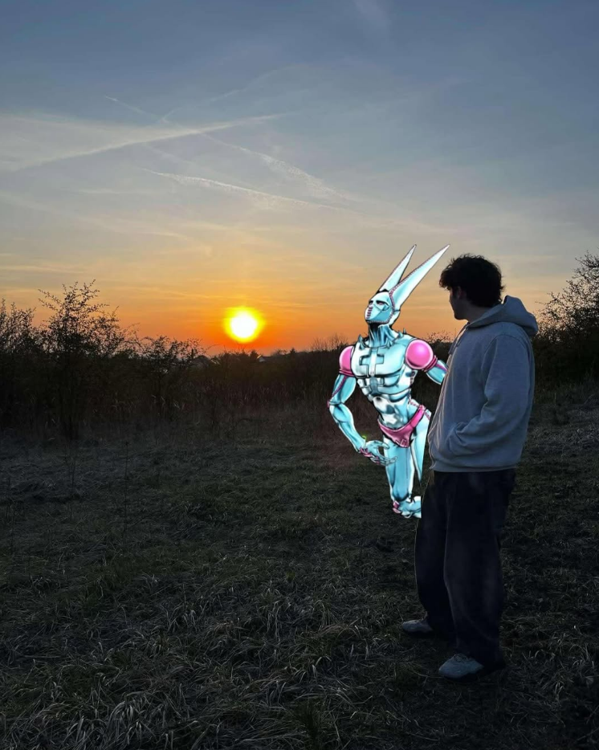

Cześć, jestem Michał!
Studiuję Informatykę o profilu praktycznym na Politechnice Śląskiej w Gliwicach oraz posiadam zawód Technika Informatyka po ukończeniu Elektronika w Sosnowcu.
W wolnym czasie wykonuje swoje projekty. Aktualnie moim priorytetowym projektem jest "Cash&Sum". Aplikacja napisana w Pythonie działająca na zasadzie kasy fiskalnej. Każdy etap publikuję na swoim Githubie.
Świetnie radzę sobię z matematyką. Jeżeli potrzebujesz kogoś rzetelnego oraz cierpliwego do pomocy z nauką odezwij się do mnie i ustalimy co i jak. Wszystkie informacje o korepetycjach z matematyki znajdziesz tutaj.
Moim celem jest połączenie pracy w zawodzie z moimi pasjami. W wolnej chwili staram się napisać książkę, którą najpierw udostępnię tutaj, a z czasem mam nadzieję oficjalnie wydać.
